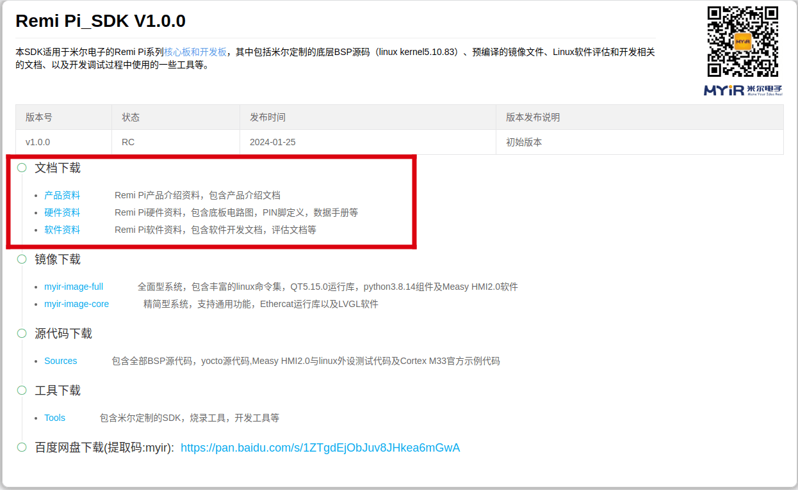
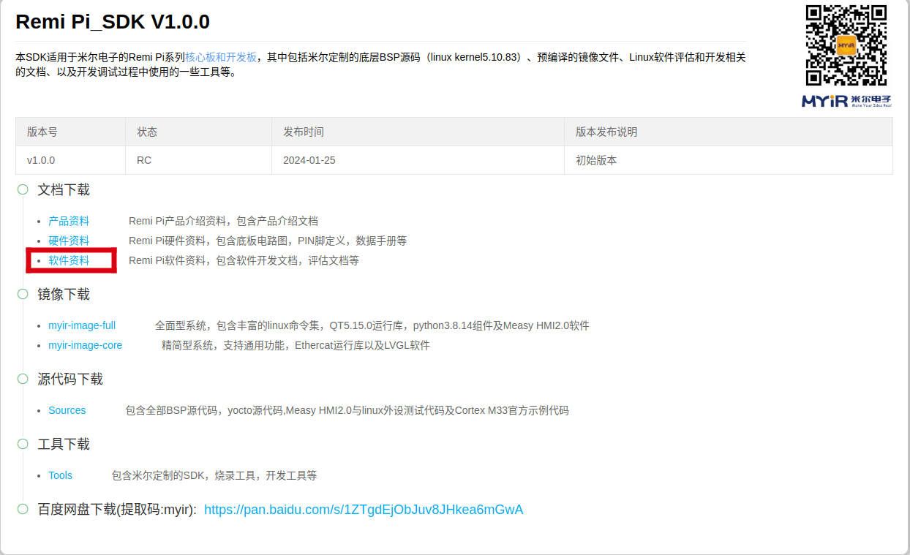
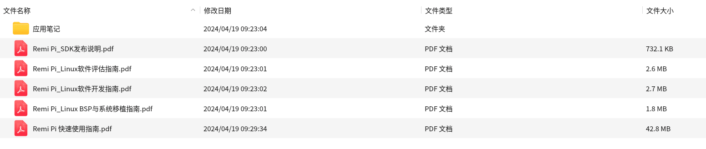
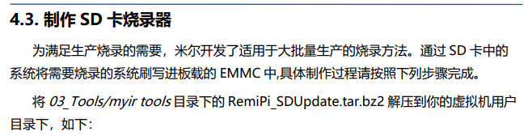
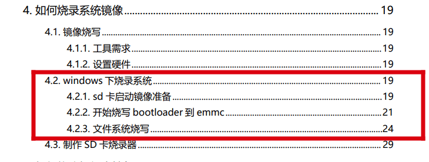
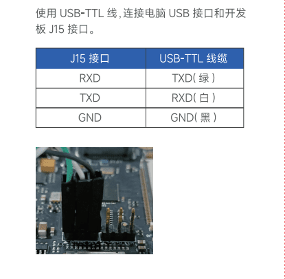

myir-remi 镜像构建与说明¶
本章主要介绍openEuler Embedded中myir-remi（瑞米派）系列板卡的镜像构建，使用和特性介绍。
myir-remi硬件介绍¶
参考: 瑞米派介绍 中《文档下载》的三个资料。
镜像构建与使用¶
构建机器和oebuild工具准备¶
（1）准备一个ubuntu x86构建主机环境（建议22.04，依赖Python>=3.8，配置建议预留200G存储）
（2）安装oebuild（具体oebuild用法可参见 安装步骤 ），注意以普通用户安装oebuild，例：
sudo apt install python3 python3-pip
# 如果python3和pip模块已安装，请忽略此python3的安装命令
pip install oebuild
# 这里安装oebuild的版本为最新版，可选版本0.0.45，命令如pip install oebuild==0.0.45
（3）准备oebuild的工具依赖（docker）：
sudo apt install docker docker.io -y
sudo groupadd docker
sudo usermod -a -G docker $(whoami)
sudo systemctl-reload && systemctl restart docker
sudo chmod o+rw /var/run/docker.sock
oebuild构建代码准备：¶
（1）初始化构建分支代码（请不要以root及sudo权限执行）：
oebuild init buildwork
# 说明：
# * buildwork为存放目录，
# * 未使用-b指定分支，默认使用master分支，等同于oebuild init buildwork -b master
# 假设执行路径位于/home/user/，执行后根据提示进入对应目录
cd /home/user/buildwork
oebuild update
#执行完成后，将在 /home/user/buildwork/src/ 目录下载好主构建源码，并初始化构建虚拟环境。
（2）初始化myir-remi构建源码及配置：
cd /home/user/buildwork
oebuild generate -p myir-remi -d myir-remi
# 以上命令可追加-f参数，通过oebuild generate -l查看支持的配置，比如-f openeuler-rt开启软实时
镜像构建和部署¶
（1）构建myir-remi镜像
cd /home/user/buildwork/myir-remi
oebuild bitbake
# oebuild bitbake执行后将进入构建交互环境
# 注意您此时应该处于进入oebuild bitbkae环境的工作根目录（如/home/openeuler/myir-remi
bitbake openeuler-image
构建完成后，输出件见/home/user/buildwork/myir-remi/output/[时间戳]，备用组件内容如下
├── u-boot.bin
├── mys-rzg2l-wifi.dtb
├── mys-rzg2l-wifi-myir-remi.dtb
├── mys-rzg2l-wifi--5.10.83-r1-myir-remi-[时间戳].dtb
├── mys-rzg2l-sdcard.dtb
├── mys-rzg2l-sdcard-myir-remi.dtb
├── mys-rzg2l-sdcard--5.10.83-r1-myir-remi-[时间戳].dtb
├── Image-mys-rzg2l-wifi.dtb
├── Image-mys-rzg2l-sdcard.dtb
├── Image
├── Flash_Writer_SCIF_RZG2L_SMARC_PMIC_DDR4_2GB_1PCS.mot
├── Flash_Writer_SCIF_RZG2L_SMARC_PMIC_1GB_DDR4_1GB_1PCS.mot
├── fip-myir-remi_pmic.srec
├── fip-myir-remi_pmic.srec
若需要交叉编译工具链，可通过如下命令生成，将在output目录下有新时间戳子目录得到输出件。
# 注意您此时应该处于进入oebuild bitbkae环境的工作根目录（如/home/openeuler/myir-remi）
bitbake openeuler-image -c populate_sdk
（2）制作sd卡镜像并烧录：
正常编译完成后并没有sd卡镜像，sd卡镜像需要单独制作，具体可参考 瑞米派介绍 中“文档下载 -> 软件资料”，如下所示：
下载好资料后内容列表如下：
打开《Remi Pi_Linux软件开发指南.pdf》，选择《4.3. 制作SD卡烧录器》，如图：
按要求制作完SD卡镜像后就是烧录了，参考《4.2 windows下烧录系统》章节，如图：
（3）启动myir-remi并连接调试：
开发板的接线方式如下图：
ubuntu下调试¶
如果终端在ubuntu系统下，则建议安装一个minicom串口工具，具体安装命令如下：
apt install minicom
然后开启tty通信，按如下命令：
minicom -D /dev/ttyUSB0 -b 115200
windows下调试¶
如果终端在windows系统下，则建议安装MobaXterm，下载MobaXterm网址 https://mobaxterm.mobatek.net，下载home-Portable版本，然后运行。
打开软件后，设置串口连接的步骤如下：
a， 打开会话的设置界面
b，选择串口类型
c，选择串口的端口号（根据实际情况选择对应的端口号），如果看不到端口号请使用360驱动大师扫描安装USB转TTL串口芯片的驱动
d，选择串口的波特率为115200
e，最后点击“OK”按钮完成设置
然后给开发版上电，即可看到系统启动日志，等系统启动后看到openEuler Embedded banner即完成启动。